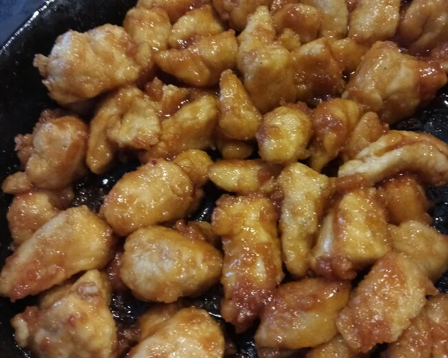

Sticky Asian Chicken Recipe

Description:
Crispy Asian style chicken coated with sweet sauce, served with boiled rice.
Ingredients
Chicken / Breading
- Around 14 ounces or 400 grams of chicken breast.
- 1 Egg.
- 3 tbsp Corn Flour.
- 10 tbsp All-Purpose Flour.
- ½ tsp Garlic Powder.
- 2 tsp Paprika Powder.
- Around 5 tsp vegetable oil for frying.
Sauce
- 1 tsp Sesame Oil.
- 2 garlic cloves, mashed to paste.
- 1 tbsp Chinese Rice Vinegar.
- 3 tbsp Honey.
- 2 tbpsp Ketchup.
- 2 tbsp Brown Sugar.
- 4 tbsp Soy Sauce.
Steps
- Prepare the sauce by mixing the ingredients together in a bowl.
- Cut the chicken into bite sized pieces.
- Place all-purpose flour in a shallow bowl. Mix in garlic powder as well as salt and pepper, ½ tsp each.
- Place lightly beaten egg in another shallow bowl.
- Coat the chicken in corn flour, dip it in egg and finally coat with seasoned all purpose-flour.
- Heat a good amount of oil on a pan to fry the chicken in. The oil should be hot enough so that the chicken sizzles when placed in the pan. You may want to do this in a couple of batches depending on the size of your pan.
- Fry until chicken is cooked and has a nice golden-brownish coating.
- Pour out excess oil, put the sauce in and mix to coat the chicken. Or place the chicken in a bowl with kitchen towels and do another batch.
- Let the sauce bubble for one or two minutes and you’re done.
- Serve with boiled rice.